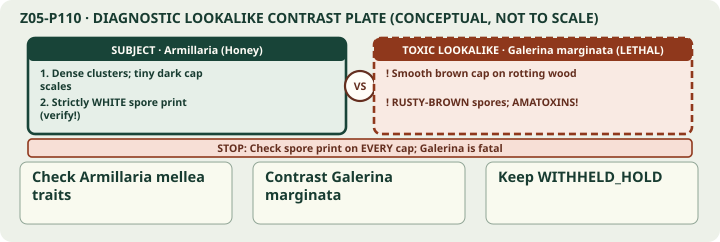

Z05-P110 · Wild foods and poisonous lookalikes · New manuscript
Honey Mushrooms (Armillaria spp.) vs Deadly Galerina (Galerina marginata)
Document diagnostic traits of Armillaria mellea and Armillaria gallica and contrasting lookalikes under permanent consumption HOLD.
When it applies · Clustered on stumps, roots, and bases of Minnesota trees; Autumn (White spore print vs deadly rusty-brown Galerina).
Equipment · Regional references, accession information and non-contact photographs or notes, where safe.

Actions
- Compare the working name Armillaria mellea and Armillaria gallica ((Vahl) P. Kumm. and Marxm. & Romagn.; syn. Honey fungus complex) against a current regional key and accession. Unverified draft cues: Clustered honey-yellow to brownish caps with tiny dark central hairs or scales; white-to-buff attached gills; cottony stem ring; strictly WHITE spore print on dark paper.[B05, B06, B07, B08, B24]
- Use the comparisons and draft traits in the taxonomic register for qualified regional review. Do not use any single feature, comparison, smell or image to rule out a toxic species.[B02, B20, B24]
- Separate recognition from eating (Deadly Galerina shares identical autumn deadwood habitat and contains heat-stable amatoxins; consumption strictly WITHHELD); keep WITHHELD_HOLD and check site and species protections before any specialist fieldwork.[B05, B24]
Failure recognition · Single-trait guessing or common names confuse Armillaria mellea and Armillaria gallica with Galerina marginata, risking poisoning.[B03, B06, B24]
Verify · Keep the identification provisional until the voucher, region, life stage and independent diagnostic characters are reviewed by the qualified specialist.[B02, B20]
Stop or change course · Keep consumption on WITHHELD_HOLD. For suspected ingestion call U.S. Poison Help at 1-800-222-1222 promptly. Call 911 for collapse, seizure, breathing trouble or inability to wake.[B09, M15]
Evidence and editorial notes
- B02 · Bell Museum (UMN) · Bell Museum Specimen Collections Portal (Current web edition)
- Section: Curated herbarium and fungarium voucher specimen standards · Conditions: Corroborating species traits against documented physical vouchers
Support: Curated herbarium and fungarium vouchers link accepted scientific names, collection locality, habitat, and morphology to verifiable specimens.
Limitations: Image-search labels and crowd-sourced guesses cannot substitute for vouchered keys and qualified taxonomic review. · Conflicting evidence: None noted.
Editorial note: Core P19-A voucher discipline. · Specialist reviewer: Herbarium / fungarium curator
Primary source · checked 2026-11-25 - B03 · USDA NRCS · PLANTS Database: Accepted Taxa and Regional Distribution (Current web edition)
- Section: Accepted botanical nomenclature, authorities, and synonyms · Conditions: Standardizing plant scientific names across regional floras
Support: Tracking accepted Latin binomials, taxonomic authorities, and legacy synonyms prevents dangerous common-name confusion.
Limitations: Common names like hemlock, nightshade, elder, or wild carrot refer to unrelated toxic and non-toxic taxa across regions. · Conflicting evidence: None noted.
Editorial note: Prevents common-name misidentification. · Specialist reviewer: Plant taxonomist
Primary source · checked 2026-11-25 - B05 · MyCoPortal · North American Fungal Voucher Collections Portal (Current web edition)
- Section: Separate fungal voucher collections and microscopic/macro traits · Conditions: Documenting macrofungi across North American collections
Support: Fungal taxonomy requires distinct anatomical schemas (cap, gills/pores/teeth, attachment, ring, volva, spore print, substrate, and often microscopy).
Limitations: Fungal species complexes frequently overlap macroscopically; photos alone cannot confirm edibility. · Conflicting evidence: None noted.
Editorial note: Keeps botanical and fungal schemas separate. · Specialist reviewer: Qualified mycologist
Primary source · checked 2026-11-25 - B06 · CDC MMWR · Notes from the Field: Severe Mushroom Poisoning — Minnesota 2018 (MMWR 68(21))
- Section: 2018 incident and cited 2006 Minnesota outbreak · Conditions: Minnesota case evidence from distinct incidents
Support: The 2018 report describes A. muscaria intoxication. It separately cites a 2006 Minnesota outbreak involving A. bisporigera and amatoxin.
Limitations: Do not conflate the clinical syndromes, use the reports to identify a specimen, or infer a reliable symptom clock. · Conflicting evidence: Conditions are recorded in the A03 audit.
Editorial note: Critical Minnesota fungal hazard evidence. · Specialist reviewer: Medical toxicologist and mycologist
Primary source · checked 2026-11-25 - B07 · CDC MMWR · Amanita phalloides Mushroom Poisonings — 2026 Outbreak Report (MMWR 75(20))
- Section: Amanita phalloides outbreak and amatoxin lethality (MMWR 75:20) · Conditions: Recognizing lethal Amanita lookalike risk and cooking myths
Support: Amatoxins in death cap and destroying angel species survive boiling, freezing, and drying; misidentification causes acute liver failure and death.
Limitations: Never rely on folklore tests, boiling, peeling, or visual similarity to safe regional species. · Conflicting evidence: None noted.
Editorial note: Prohibits boiling/peeling mushroom myths. · Specialist reviewer: Medical toxicologist and mycologist
Primary source · checked 2026-11-25 - B08 · North American Mycological Association · Mushroom Poisoning Syndromes Reference (Current web edition)
- Section: Mushroom poisoning syndrome classes and specimen retention · Conditions: Evaluating suspected wild fungal exposure
Support: Mushroom toxins span distinct syndromes (amatoxins, gyromitrin, orellanine, muscarine, ibotenic acid, GI irritants) with onset from minutes to days.
Limitations: Save remaining uneaten mushroom pieces in a paper bag (not sealed plastic) for mycologist identification if exposure occurs, and call Poison Control immediately. · Conflicting evidence: None noted.
Editorial note: Grounds Z05 fungal toxicology & emergency referral. · Specialist reviewer: Mycology toxicology reviewer
Primary source · checked 2026-11-25 - B09 · National Capital Poison Center · First Aid for Poisonings (Current web edition)
- Section: When to call 911; get help from poison experts · Conditions: Suspected poisoning in the United States
Support: Call 911 for collapse, seizure, trouble breathing or inability to wake. Otherwise promptly call Poison Help at 1-800-222-1222.
Limitations: Use route- and substance-specific advice. Do not wait for symptoms or collect unknown material if doing so risks exposure or delays care. · Conflicting evidence: Conditions are recorded in the A03 audit.
Editorial note: Mandatory Z05 poison-response escalation. · Specialist reviewer: Clinical toxicologist / Poison Center
Primary source · checked 2026-11-25 - B20 · USDA Forest Service · Celebrating Wildflowers: Plant Identification and Conservation (Current web edition)
- Section: Botanical morphology terminology and multi-character keys · Conditions: Observing leaf venation, margins, flower symmetry, and fruit anatomy
Support: Accurate plant identification requires confirming multiple independent morphological characters at the observed life stage.
Limitations: Missing flowers, fruit, or underground parts require stopping identification rather than guessing. · Conflicting evidence: None noted.
Editorial note: Enforces multi-feature identification standard. · Specialist reviewer: Plant taxonomist
Primary source · checked 2026-11-25 - B24 · National Capital Poison Center · Mushroom poisoning: prevention and response (Current reference)
- Section: Prevention tips and what to do after ingestion · Conditions: Wild mushroom recognition and suspected ingestion
Support: Lookalikes can fool observers. Avoid eating wild fungi on unverified identification and seek poison-centre advice promptly after suspected ingestion.
Limitations: Reject folk tests and generated-image clearance as an editorial restriction. Preparation cannot substitute for poison risk or identification review. · Conflicting evidence: Conditions are recorded in the A03 audit.
Editorial note: Enforces Z05 fail-closed edibility rule. · Specialist reviewer: Botanist, mycologist, and clinical toxicologist
Primary source · checked 2026-11-25 - M15 · National Capital Poison Center · First Aid for Poisonings (Current web edition)
- Section: First aid for swallowed, inhaled, skin and eye exposure; when to call 911 · Conditions: Suspected poisoning in the U.S.
Support: For collapse, seizure, breathing trouble or inability to wake call 911. Otherwise get timely poison-center advice. Do not induce vomiting.
Limitations: Substance and route determine immediate care. Keep rescuers away from contaminated scenes. · Conflicting evidence: See A02 claim audit for boundaries.
Editorial note: Separates 911 life-threat activation from Poison Control guidance. · Specialist reviewer: Medical toxicology and poison control
Primary source · checked 2026-11-25
Source lineage · New manuscript (Z05 P19-C regional atlas) · Classification · New manuscript.